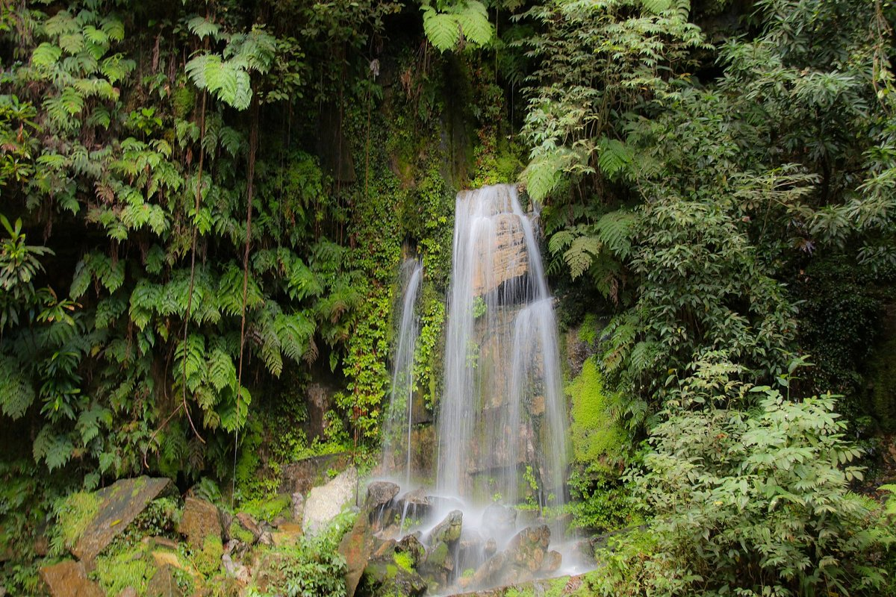

Conheça o lugar

A Cachoeira Pé da Serra é um dos atrativos naturais mais conhecidos da região de Barra do Garças, no estado de Mato Grosso. Localizada em uma área cercada pela vegetação típica do Cerrado brasileiro, a cachoeira atrai turistas e moradores que procuram lazer, tranquilidade e contato direto com a natureza. O local é bastante frequentado durante finais de semana, feriados e períodos de férias, sendo considerado uma importante atração turística da região do Araguaia. A Cachoeira Pé da Serra recebe esse nome por estar localizada próxima às áreas de serra da região, em meio a paisagens naturais marcadas por formações rochosas, vegetação preservada e cursos d’água naturais. O ambiente oferece uma combinação entre águas correntes, áreas verdes e clima agradável, criando um cenário muito procurado por visitantes interessados em descanso e ecoturismo. As águas da cachoeira formam pequenas piscinas naturais utilizadas para banho e recreação. Durante o período de seca, as águas costumam ficar mais transparentes e o acesso ao local se torna mais fácil para os visitantes. Já no período chuvoso, o aumento do volume de água deixa a cachoeira ainda mais bonita e reforça a força das quedas d’água naturais da região. Além da beleza natural, o local também é bastante procurado por famílias e grupos de amigos que desejam aproveitar momentos de lazer em meio à natureza. O ambiente tranquilo, o som das águas e a presença da vegetação típica do Cerrado fazem da cachoeira um espaço agradável para descanso e contemplação das paisagens naturais.
A região da Cachoeira Pé da Serra também chama atenção pela presença de pequenas trilhas ecológicas utilizadas pelos visitantes para explorar a natureza ao redor. Essas trilhas permitem contato mais próximo com a fauna e a flora do Cerrado brasileiro, além de proporcionarem belas paisagens naturais durante o percurso. Outro destaque da cachoeira é sua proximidade com outros pontos turísticos importantes de Barra do Garças, especialmente atrações ligadas ao Parque Estadual da Serra Azul. Isso faz com que muitos turistas incluam o local em roteiros de turismo ecológico pela região do Araguaia. A vegetação preservada ao redor da cachoeira abriga diversas espécies típicas do Cerrado, incluindo aves silvestres, pequenos animais e plantas nativas da região. A preservação ambiental do local é considerada importante para manter o equilíbrio ecológico e conservar os recursos naturais existentes na área. Além do turismo e do lazer, a Cachoeira Pé da Serra contribui para fortalecer a valorização das paisagens naturais de Barra do Garças. O local ajuda a divulgar o potencial ecológico da região e reforça a importância da preservação ambiental das áreas naturais do estado de Mato Grosso.
A melhor época para visitar a Cachoeira Pé da Serra costuma ser durante o período de seca, entre os meses de maio e setembro, quando as trilhas ficam mais acessíveis e as condições para banho e caminhadas se tornam mais seguras. Mesmo assim, o local recebe visitantes praticamente durante todo o ano devido à sua popularidade entre turistas e moradores da região. Muitas pessoas também procuram a cachoeira para fotografar as paisagens naturais e aproveitar momentos de tranquilidade em meio ao Cerrado brasileiro. O cenário formado pelas quedas d’água, pelas pedras e pela vegetação preservada faz do local um dos atrativos naturais mais bonitos da região do Araguaia. A Cachoeira Pé da Serra representa uma das várias atrações naturais que ajudam a destacar Barra do Garças como um importante destino turístico do estado de Mato Grosso. A combinação entre natureza, águas naturais, lazer e paisagens preservadas transforma o local em uma experiência bastante procurada por visitantes de diferentes regiões do Brasil. Além de toda a beleza natural e da importância turística para Barra do Garças, a Cachoeira Pé da Serra possui localização relativamente acessível para visitantes que desejam conhecer uma das paisagens naturais mais conhecidas da região. O local oferece uma experiência de contato direto com a natureza e reforça a importância da preservação ambiental das áreas naturais do Cerrado mato-grossense.
As condições de acesso, funcionamento, valores e regras podem mudar. Confirme as informações com responsáveis ou órgãos locais antes de realizar o passeio.